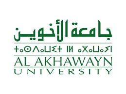
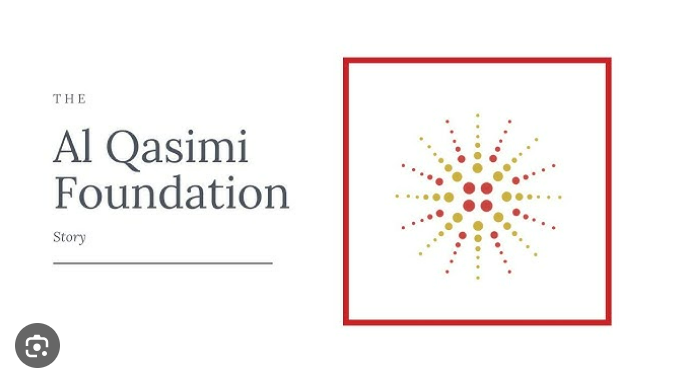
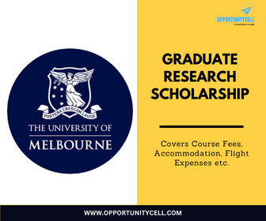
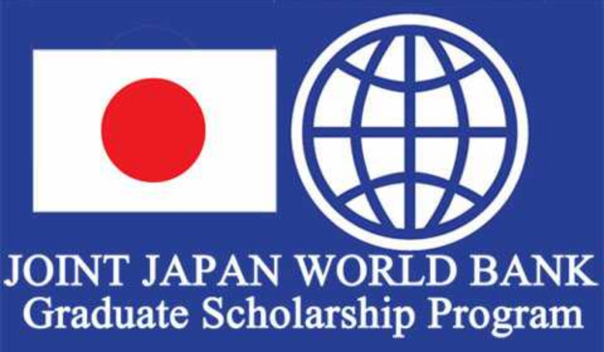
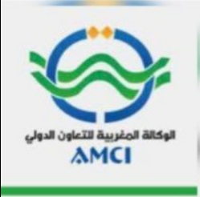
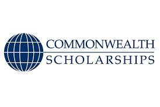
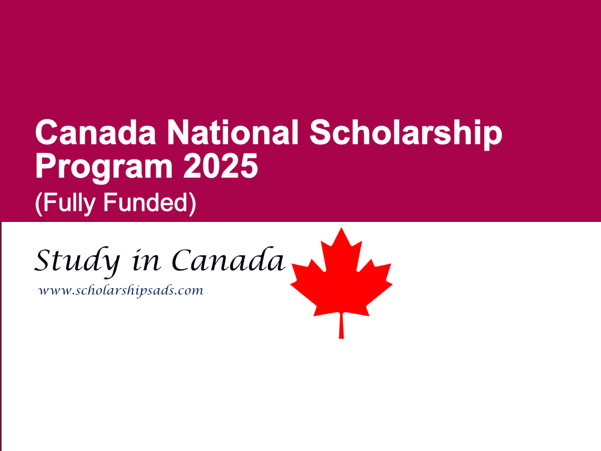
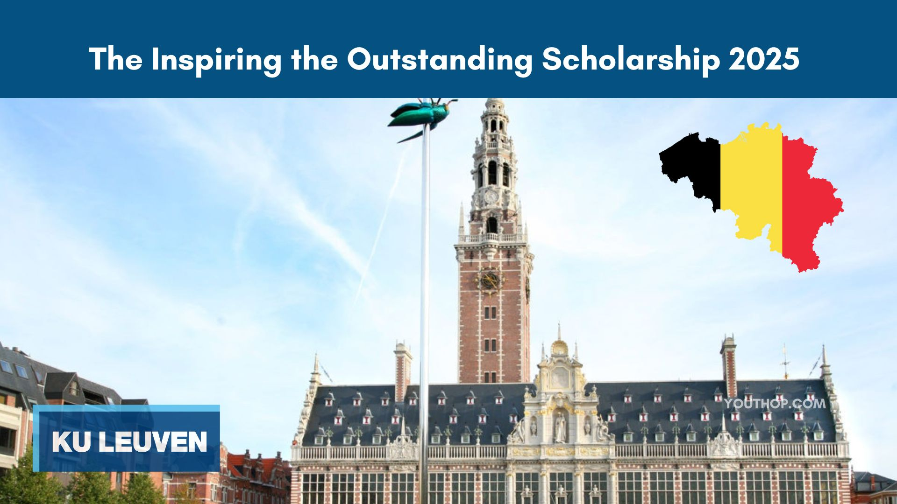
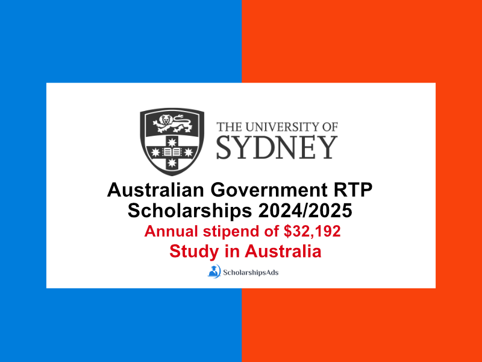
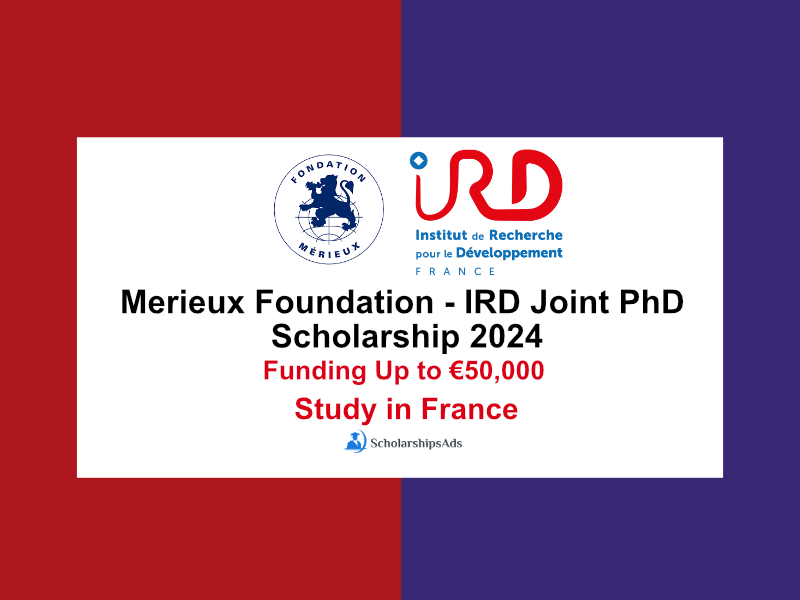

Global Undergraduate Scholarship
Fully-funded/partial scholarships for students pursuing bachelor’s degrees globally. Open to all fields of study.
Deadline: March 31, 2025
Apply Now

Doctoral Research Grant by The Al Qasimi Foundation
Doctoral Research Grants encourage scholars from a wide range of disciplines and professional fields to undertake research.
Deadline: April 15, 2025
Apply Now
Bachelor of Science in International Business
Cultivate a global mindset & navigate the evolving world of international business through hands-on learning & develop the skills employers want.
Deadline: May 10, 2025
Apply Now

Graduate Research Scholarship
The Fulbright Program enables Moroccan graduate students, doctoral candidates, PhD holders, and young professionals to study and conduct research in the United States.
Deadline: June 30, 2025
Apply Now

Graduate Scholaship Program
open to students from developing countries with relevant professionnal experience and a history of supporting their countrie's developement.
Deadline: June 30, 2025
Apply Now

AMCI grant
This Program enables Moroccan graduate students, doctoral candidates, PhD holders, and young professionals to study and conduct research s.
Deadline: June 30, 2025
Apply Now

Commonwealth Master’s Scholarships
The Commonwealth Scholarship Commission in the UK (CSC) provides the UK government scholarship scheme led by international development objectives.
Deadline: June 30, 2025
Apply Now

Canada National Scholarship Program 2025 (Fully Funded)
The Fulbright Program enables Moroccan graduate students, doctoral candidates, PhD holders, and young professionals to study and conduct research in the United States.
Deadline: June 30, 2025
Apply Now

KU Leuven Belgium Inspiring the Outstanding Scholarships 2025 (Fully Funded)
KU Leuven, one of Europe's most prestigious universities, is committed to fostering academic excellence and making higher education accessible to talented students worldwide.
Deadline: June 30, 2025
Apply Now

University of Sydney Australian Government RTP Scholarships 2025
The scholarship allows Postgraduate level program(s) in the field of All Subjects taught at University of Sydney
Deadline: June 30, 2025
Apply Now

Merieux Foundation - IRD Joint PhD Scholarship
he scholarship allows PhD level program(s) in the field of taught at France Universities
Deadline: June 30, 2025
Apply Now